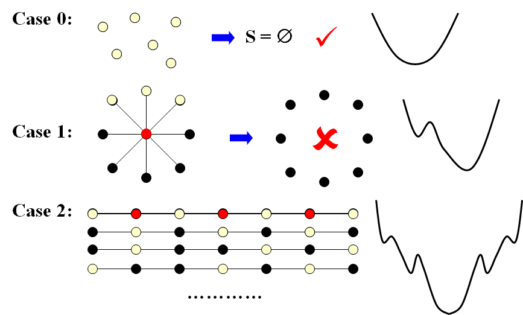
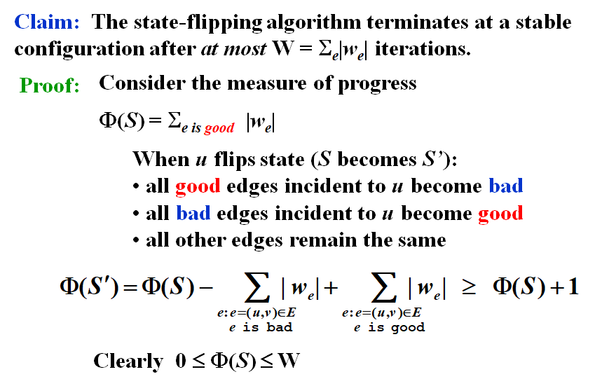
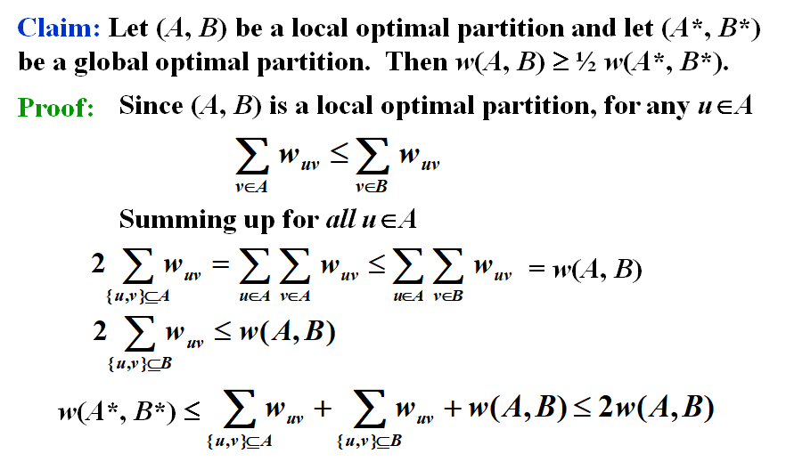

Chapter12 ---Local Search | 局部搜索¶
用于在给定问题的搜索空间中找到接近最优解或全局最优解的过程。
Local Search是一种启发式算法，解的质量具有不稳定性。
Framework¶
Local¶
- 在可行集(Feasible solution set)里定义邻域(neighborhoods)
- 局部最优(local optimum)就是邻域里的最优解
Search¶
- 从一个可行解开始在邻域里找一个更好的解
- 如果不能再优化，那就找到的优解
Template¶
-
\(S \sim S'\) : \(S'\) is a neighboring solution of \(S\) —— \(S'\) can be obtained by a small modification of \(S\).
-
\(N(S)\): neighborhood of \(S\) —— the set \(\{ S': S \sim S' \}\).
SolutionType Gradient_descent()
{ Start from a feasible solution S in FS ;
MinCost = cost(S);
while (1) {
S’ = Search( N(S) ); /* find the best S’ in N(S) */
CurrentCost = cost(S’);
if ( CurrentCost < MinCost ) {
MinCost = CurrentCost; S = S’;
}
else break;
}
return S;
}
Vertex Cover Problem¶
给定一个无向图 \(G = (V, E)\)，找到 \(V\) 的最小子集 \(S\) ，满足对于 \(E\) 中所有的边 \((u, v)\)， 都有 \(u\in S\) 或 \(v\in S\) 。
Define¶
-
Feasible solution set：\(F(S)\)：所有包含的顶点
-
\(cost(S)=|S|\)
-
\(S \sim S'\)：\(S'\) 由 \(S\) 删除（或增加）一个节点得到
Search¶
从 \(S=V\) 开始，删除一个节点，并检查 \(S'\) 是否为 \(cost\) 更小的顶点覆盖。
如图所示在Case1如果中删除了中间点将会得到一个worst solution。

The Metropolis Algorithm (Improve)¶
SolutionType Metropolis()
{ Define constants k and T;
Start from a feasible solution S in FS ;
MinCost = cost(S);
while (1) {
S’ = Randomly chosen from N(S); //Adding is allowed
CurrentCost = cost(S’);
if ( CurrentCost < MinCost ) {
MinCost = CurrentCost; S = S’;
}
else {
With a probability e^{-d cost/(KT)} , let S = S’;
else break;
}
}
return S;
}
Hopfield Neural Networks¶
给定图 \(G = (V， E)\)，边权为整数 \(w\)（可正可负)。
如果 \(w_e< 0\)，其中 \(e = (u, v)\)，那么 \(u\) 和 \(v\) 要有相同的状态(\(\pm1\))；
如果\(w_e> 0\)，那么 \(u\) 和 \(v\) 要有不同的状态。
输出：每个顶点 \(u\) 的状态 \(s_u\)。
Note
可能不存在使所有边都满足需求，因此只需找到一个足够好的解
Definition¶
-
In a configuration \(S\), edge \(e = (u, v)\) is good if \(w_e s_u s_v < 0\) (\(w_e < 0~iff~s_u = s_v\) ); otherwise, it is bad.
-
In a configuration \(S\), a node \(u\) is satisfied if the weight of incident good edges \(\geq\) weight of incident bad edges.
- A configuration is stable if all nodes are satisfied.
State-flipping Algorithm¶
ConfigType State_flipping()
{
Start from an arbitrary configuration S;
while ( ! IsStable(S) ) {
u = GetUnsatisfied(S);
su = - su;
}
return S;
}
Solution¶

Related to Local Search¶
- 目标：求最大的 \(\Phi\)
- 可行集 \(F(S)\)：configurations
- \(S\sim S'\)：\(S'\) 可以通过改变 \(S\) 中的一个状态获取
Claim
Any local maximum in the state-flipping algorithm to maximize \(\Phi\) is a stable configuration.
Note
该算法是否多项式可解仍然未知。
The Maximum Cut Problem¶
给定一个无向图 \(G=(V,E)\) ，每条边的权重都为正整数 \(w_e\)，找到一个node partition \((A,B)\)，使得穿过分割线的边的总权重最大。
Related to Local Search¶
- 目标：求最大的 \(w(A,B)\)
- 可行集 \(F(S)\)：任意切分 \((A,B)\)
- \(S\sim S'\)：\(S'\) 可以通过把一个点从 \(A\) 移到 \(B\)（或从 \(B\) 移到 \(A\) ）得到
Solution¶

Reference
\(\bullet\) [Sahni-Gonzales 1976] There exists a 2-approximation algorithm for MAX-CUT.
\(\bullet\) [Goemans-Williamson 1995] There exists a 1.1382(\(\max_{0\leq \theta \leq \pi}\frac{\pi}{2}\frac{1-\cos \theta}{\theta}\))-approximation algorithm for MAX-CUT.
\(\bullet\) [Håstad 1997] Unless P = NP, no 17/16 approximation algorithm for MAX-CUT.
Big-improvement-flip¶
（对于原算法可能无法在多项式时间完成的优化）
只有在value至少增加 \(\frac{2\epsilon}{|V|}w(A,B)\) 时才进行 flip 操作。
Claim
直到结束, Big-improvement-flip的结果满足\((2+\epsilon)w(A,B)\geq w(A^*,B^*)\)
Claim
直到结束, Big-improvement-flip至多进行O(\(n/\epsilon \log w\))次 flips